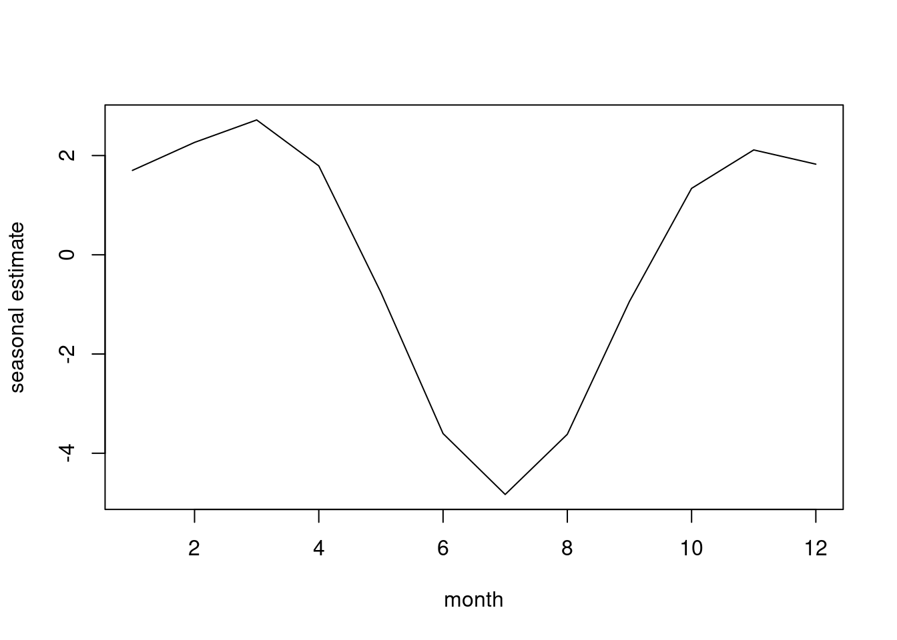
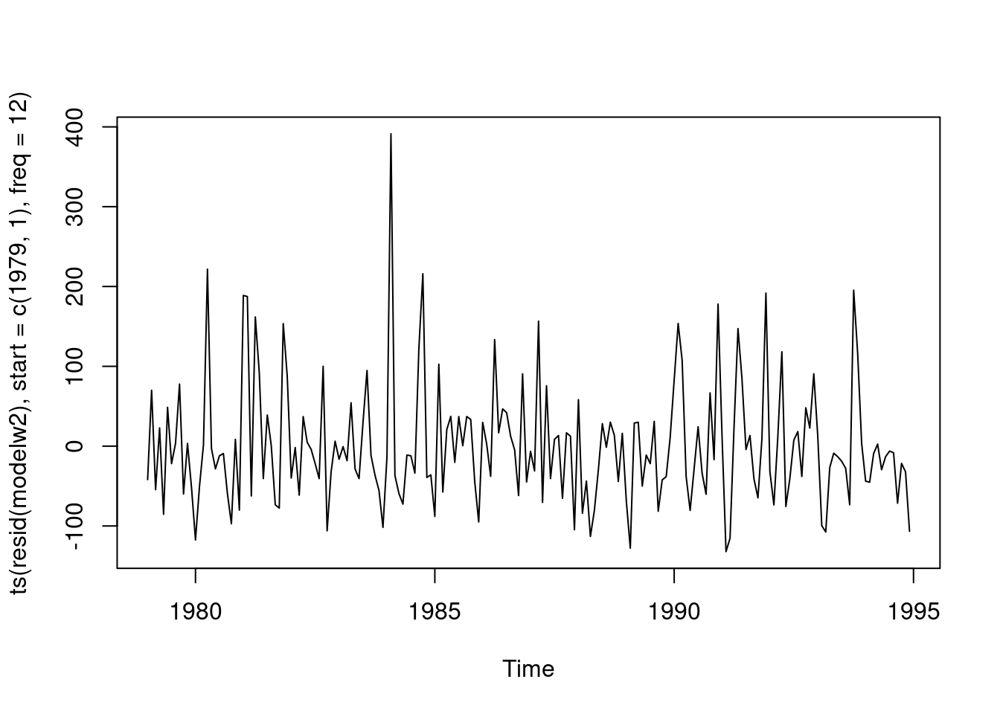
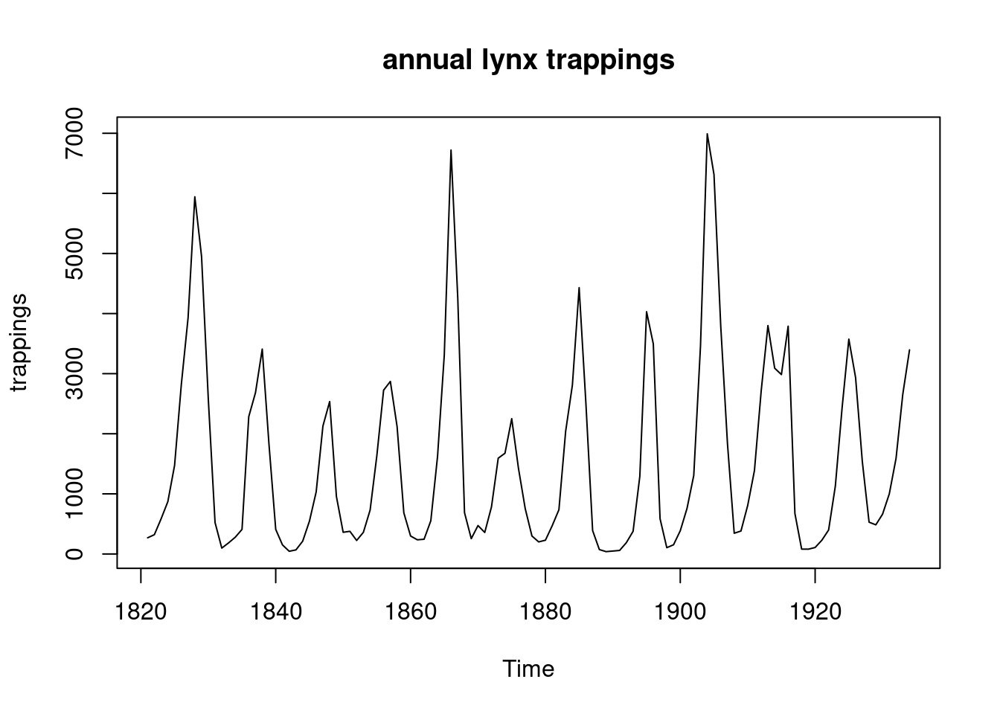
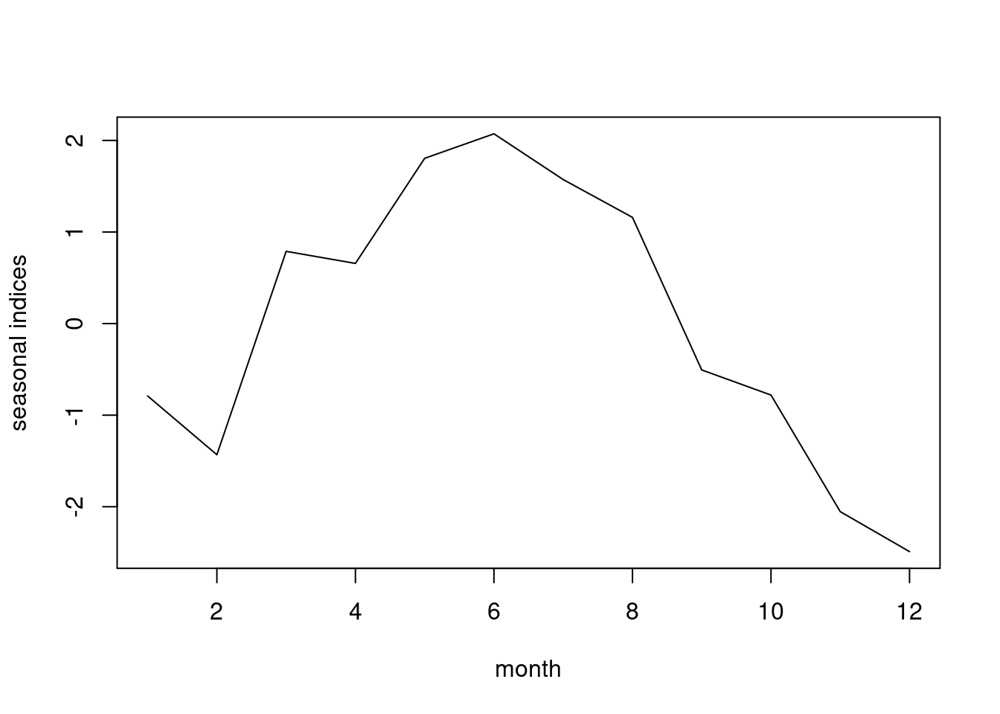
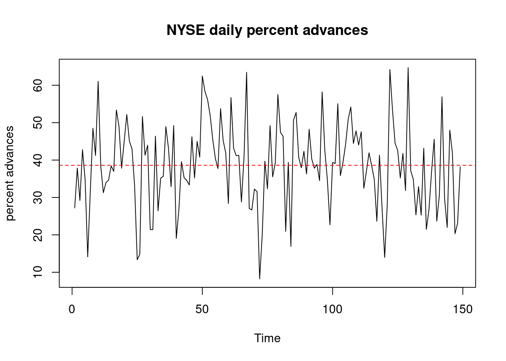
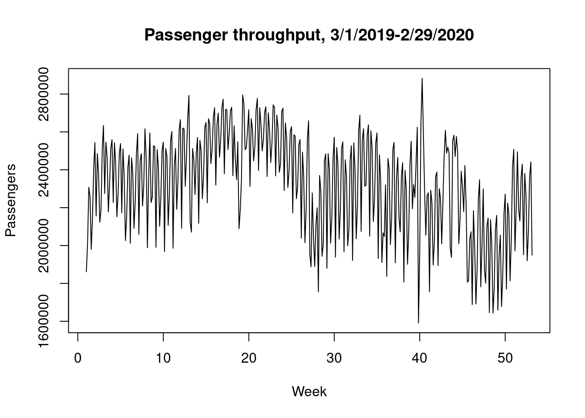
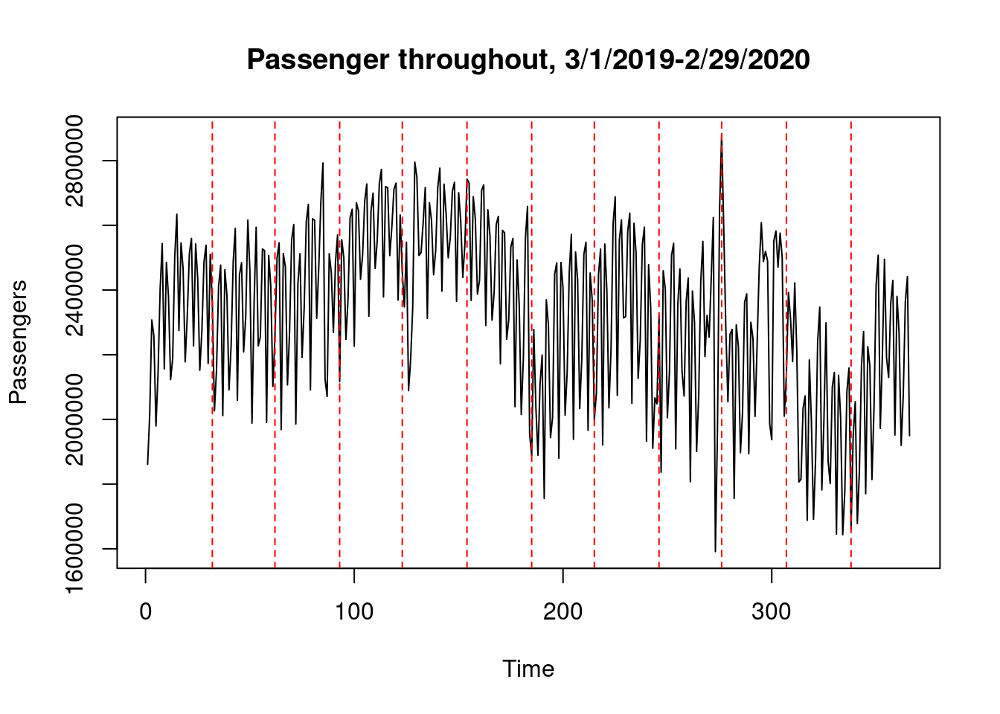
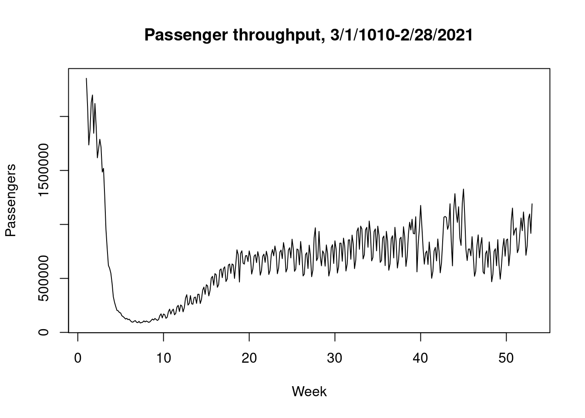
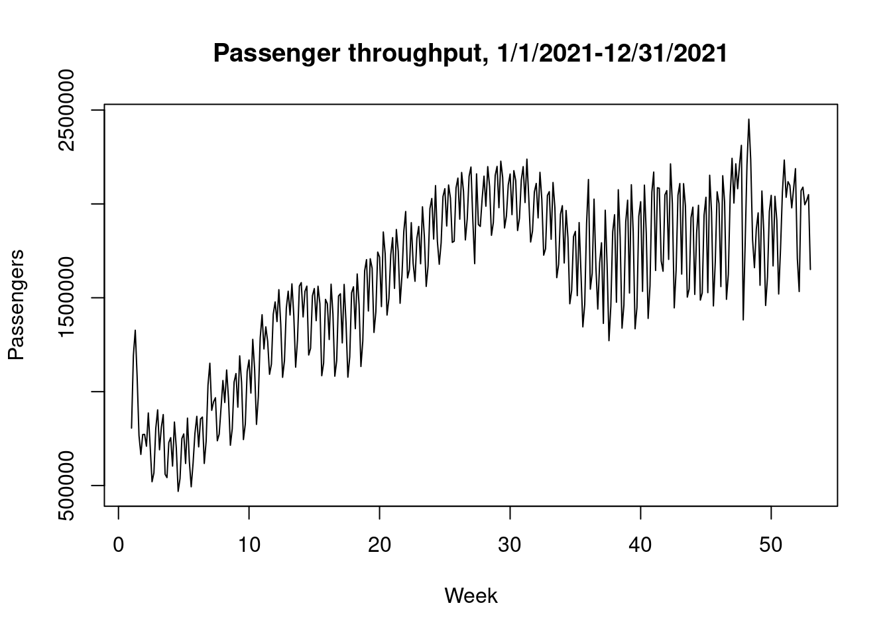

Time Series Forecasting
2022-01-19
1 basics
1.1 Decomposition Models
Additive Decomposition Model
Where y is the response, T is the trend component (slowly varying), S is a seasonal component, and epsilon is a disturbance term:
\[ \begin{equation} y_t = T_t + S_t + \epsilon_t \end{equation} \]
Multiplicative Decomposition Model
\[ \begin{equation} y_t = T_t S_t \epsilon_t \end{equation} \]
Additive Model
Logging converts the multiplicative form to additive in thel ogs of components.
\[ \begin{equation} y_t = logT_t + logS_t + log\epsilon_t \end{equation} \]
Use multiplicative model in cases of increasing volaticity as response rises, rather than additive. If volatility does not change according to response level, both additive and multiplicative can be used.
1.2 Model assumptions
Mean of 0 and constant variance for errors Errors are uncorrelated. Errors are normally distributed
1.3 Examples
1.3.1 Example
usbeer <- read.csv("/cloud/project/data/beer.txt")
attach(usbeer)
head(usbeer)
class(usbeer)
usbeer.ts<-ts(beer,start=c(1987,1),freq=12)
plot(usbeer.ts,ylab="production",main="monthly US beer production")
cycle(usbeer.ts)
boxplot(usbeer.ts~cycle(usbeer.ts))
fmonth<-as.factor(month)
boxplot(usbeer.ts~fmonth)
beerexpansion<-
c(beer[1:43],rep(NA,8),beer[52:171],rep(NA,8),beer[180:252],rep(NA,18),
beer[271:372])
beercontraction<-
c(rep(NA,43),beer[44:51],rep(NA,120),beer[172:179],rep(NA,73),beer[253:
270],rep(NA,102))
plot(ts(beerexpansion,start=c(1987,1),freq=12),ylim=c(13,22),ylab="production",main="monthly US beer production",col="green",lwd=2)
lines(ts(beercontraction,start=c(1987,1),freq=12),col="red",lwd=2)
legend("topleft",legend=c("expansion","contraction"),col=c("green","red
"),lty=1,cex=0.8)1.3.2 Example
ontgas <- read.csv("/cloud/project/data/Ontariogasdemand.txt")
attach(ontgas)
# head(ontgas)
ontariogas.ts <- ts(ontgas[,1], start = c(1960,1), freq = 12)
plot(ontariogas.ts, ylab = "gas demand", main = "Ontario gas demand,
1960-1975")
1.3.3 Example
memp <- read.csv("/cloud/project/data/Memp1619.txt")
attach(memp)
# head(memp)1.3.4 Example
pass <- read.csv("/cloud/project/data/Intair.txt")
attach(pass)
# head(pass)
pass.ts <- ts(passengers, start = c(1949,1), freq = 12)
plot(pass.ts, ylab = "passengers (1000s)", main = "monthly international airline passengers, in 1000s")
lpass <- log(passengers)
class(lpass)## [1] "numeric"lpass.ts <- ts(lpass, start = c(1949,1), freq = 12)
class(lpass.ts)## [1] "ts"plot(lpass.ts, ylab = "log(passengers(1000s))", main = "log monthly international airline passengers, in 1000s")
monthavg <- matrix(rep(0,12), ncol = 1)
for(i in 1:12){
monthavg[i] <- mean(window(pass.ts, start = c(1949,i), freq = TRUE))
}
monthavg## [,1]
## [1,] 241.7500
## [2,] 235.0000
## [3,] 270.1667
## [4,] 267.0833
## [5,] 271.8333
## [6,] 311.6667
## [7,] 351.3333
## [8,] 351.0833
## [9,] 302.4167
## [10,] 266.5833
## [11,] 232.8333
## [12,] 261.8333options(digits=5)
monthavg## [,1]
## [1,] 241.75
## [2,] 235.00
## [3,] 270.17
## [4,] 267.08
## [5,] 271.83
## [6,] 311.67
## [7,] 351.33
## [8,] 351.08
## [9,] 302.42
## [10,] 266.58
## [11,] 232.83
## [12,] 261.83month <- rep(seq(1:12), times =12)
matrix(tapply(passengers, month, mean), ncol = 1)## [,1]
## [1,] 241.75
## [2,] 235.00
## [3,] 270.17
## [4,] 267.08
## [5,] 271.83
## [6,] 311.67
## [7,] 351.33
## [8,] 351.08
## [9,] 302.42
## [10,] 266.58
## [11,] 232.83
## [12,] 261.831.3.5 Example
trappings <- read.csv("/cloud/project/data/Lynx.txt")
attach(trappings)
head(trappings)## lynx lnmink lnmuskrat mink muskrat
## 1 269 NA NA NA NA
## 2 321 NA NA NA NA
## 3 585 NA NA NA NA
## 4 871 NA NA NA NA
## 5 1475 NA NA NA NA
## 6 2821 NA NA NA NAtrappings[28:33,]## lynx lnmink lnmuskrat mink muskrat
## 28 2536 NA NA NA NA
## 29 957 NA NA NA NA
## 30 361 10.2962 12.075 29620 175466
## 31 377 9.9594 12.179 21150 194678
## 32 225 10.1210 12.586 24860 292523
## 33 360 10.1327 13.110 25152 493955lynx.ts<- ts(trappings[,1],start = 1821)
plot(lynx.ts, ylab = "trappings", main = "annual lynx trappings")
lynx.ts <- ts(trappings[,1], start = 1821)
mink.ts <- ts(trappings[,4], start = 1821)
muskrat.ts <- ts(trappings[,5], start = 1821)
plot(cbind(lynx.ts, mink.ts, muskrat.ts))
1.3.6 Example
garbage <- read.csv("/cloud/project/data/Garbage.txt")
attach(garbage)
head(garbage)## date fiscalyr fee tonnage marlene george mg
## 1 123084 85 28.26 321.14 0 1 0
## 2 10685 85 28.26 319.75 0 0 0
## 3 11385 85 28.26 199.35 1 0 0
## 4 12085 85 28.26 151.59 1 0 0
## 5 12785 85 28.26 137.98 0 1 0
## 6 20385 85 28.26 106.76 0 1 0tonnage.ts<-ts(garbage[,4])
plot(tonnage.ts,ylab = "tonnage", main = "weekly tonnage recorded")
1.3.7 Example
rain <- read.csv("/cloud/project/data/rainfall.txt")
attach(rain)
head(rain)## year month monthlength time rainfall
## 1 1979 1 31 1 90
## 2 1979 2 28 2 193
## 3 1979 3 31 3 92
## 4 1979 4 30 4 148
## 5 1979 5 31 5 0
## 6 1979 6 30 6 88plot(ts(rainfall, start = c(1979,1), freq =12))
1.3.8 Example
nyseadv <- read.csv("/cloud/project/data/nyseadv.txt")
attach(nyseadv)
head(nyseadv)## pctadvnc
## 1 27.22
## 2 37.85
## 3 29.20
## 4 42.77
## 5 34.81
## 6 14.14pctadvnc.ts <- ts(pctadvnc)
plot(pctadvnc.ts, ylab = "percent advances", main = "NYSE daily percent advances")
abline(h=mean(pctadvnc), lty = 2, col = "red")
1.3.9 Example
tsa <- read.csv("/cloud/project/data/TSAnew2.txt")
attach(tsa)
head(tsa)## Date Year Weekday Travelers logTravelers Time
## 1 3/1/2019 2019 6 1861286 14.437 1
## 2 3/2/2019 2019 7 2015079 14.516 2
## 3 3/3/2019 2019 1 2307393 14.652 3
## 4 3/4/2019 2019 2 2257920 14.630 4
## 5 3/5/2019 2019 3 1979558 14.498 5
## 6 3/6/2019 2019 4 2143619 14.578 6tsa19.ts <- ts(Travelers[1:366], start = c(1), freq = 7)
plot(tsa19.ts, ylab = "Passengers", xlab = "Week", main = "Passenger throughput, 3/1/2019-2/29/2020")
tsa192.ts <- ts(Travelers[1:366])
plot(tsa192.ts, ylab = "Passengers", xlab = "Time",
main = "Passenger throughout, 3/1/2019-2/29/2020")
abline(v=c(32,62,93,123,154,185,215,246,276,307,338),
lty=2, col = "red")
tsa20.ts <- ts(Travelers[367:731],start = c(1), freq = 7)
plot(tsa20.ts, ylab = "Passengers", xlab = "Week", main= "Passenger throughput, 3/1/1010-2/28/2021")
ltsa20.ts <- ts(log(Travelers)[367:731],start = c(1), freq = 7)
plot(ltsa20.ts, ylab = "Passengers", xlab = "Week", main = "log Passenger throughput, 3/1/2020-2/28/2021")
ltsa19.ts <- ts(log(Travelers)[1:366],start = c(1), freq = 7)
plot(ltsa19.ts, ylab = "log Passengers", xlab = "Week", main = "Passenger throughput", ylim = c(11,16), lty = 1, lwd = 2, col= "red")
lines(ltsa20.ts, lty=1, lwd = 2, col = "blue")
legend("topleft", legend = c("3/1/2019-2/29/2020","3/1/2020-2/28/2021"), col = c("red", "blue"), lty = 1, cex = 0.9)
tsa21.ts <- ts(Travelers[673:1037],start = c(1), freq =7)
plot(tsa21.ts, ylab = "Passengers", xlab = "Week", main = "Passenger throughput, 1/1/2021-12/31/2021")
weekdayav19 <- tapply(Travelers[1:366],Weekday[1:366],mean)
dmweekdayav19 <- weekdayav19-mean(weekdayav19)
cbind(weekdayav19,dmweekdayav19)## weekdayav19 dmweekdayav19
## 1 2457866 135980
## 2 2428052 106167
## 3 2128908 -192977
## 4 2217986 -103900
## 5 2446768 124882
## 6 2501225 179339
## 7 2072395 -249491weekdayav21 <- tapply(Travelers[673:1037],Weekday[673:1037], mean)
dmweekdayav21 <- weekdayav21-mean(weekdayav21)
cbind(weekdayav21, dmweekdayav21)## weekdayav21 dmweekdayav21
## 1 1767802 179305
## 2 1664594 76098
## 3 1355662 -232834
## 4 1430292 -158204
## 5 1690873 102377
## 6 1728013 139517
## 7 1482237 -106259